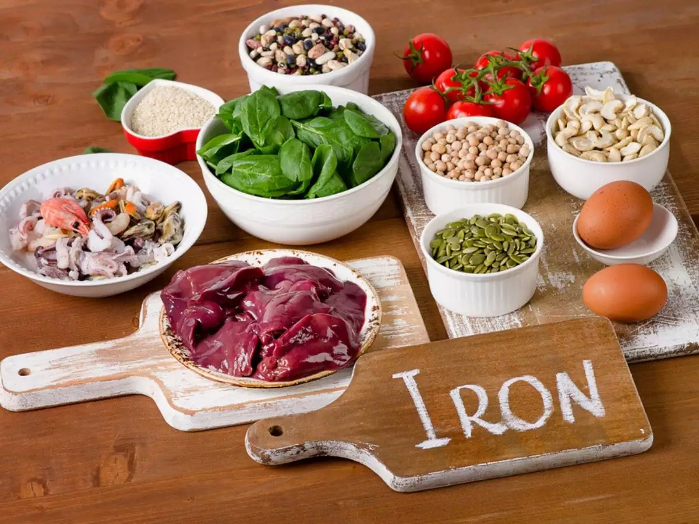
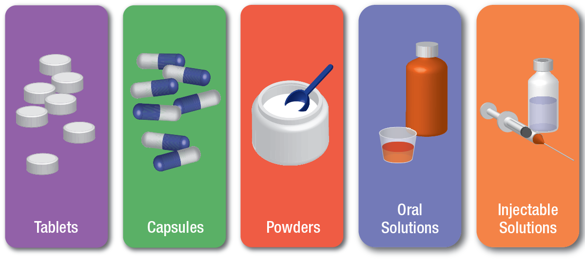
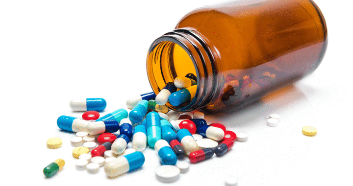

Overview

Iron is an essential mineral for the body, but it can be harmful in large doses. The LD50 (lethal dose for 50% of the
population) of iron is approximately 30 grams per kilogram of body weight. This means that consuming a large amount of
iron can be dangerous and even fatal.

It's important to be aware of the amount of iron you consume. The recommended daily allowance (RDA) for iron varies
depending on age and gender, but generally ranges from 8 to 18 milligrams per day. Consuming more than the RDA can lead
to iron toxicity, especially in children, who are more sensitive to iron overdose.
Physical Effects
Iron overdose can lead to serious health problems. Symptoms of iron toxicity include nausea, vomiting, abdominal pain,
and diarrhea. In severe cases, it can cause organ damage, coma, and even death. It's crucial to seek medical attention
immediately if you suspect iron poisoning.
Prevention

To prevent iron overdose, store iron supplements and iron-containing products out of reach of children and in childproof
containers. Follow the recommended dosage guidelines for iron supplements and do not exceed the recommended daily
allowance. If you have young children, consider using iron-fortified products with caution and supervise their use.

In
case of accidental ingestion, contact poison control or seek medical help immediately. Regularly educate yourself and
others about the potential dangers of iron overdose.
Conclusion
In conclusion, while iron is an essential nutrient, it's important to consume it in the right amounts. Avoid taking iron
supplements unless advised by a healthcare professional, and keep iron-containing products out of reach of children. If
you or someone you know may have consumed too much iron, seek medical help immediately. Stay safe and be mindful of your
iron intake.